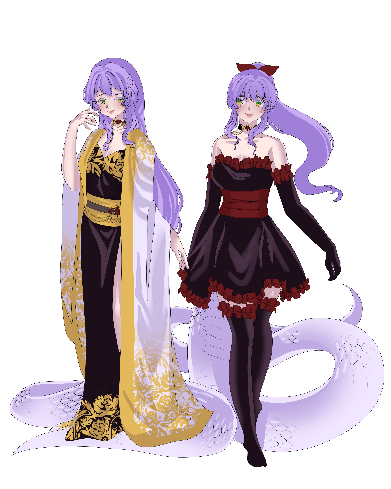

Subject Photograph

CLASSIFIED RECORD
Subject File 001-A — "Wisteria The Viper"
"Silence is a little bland, don't you think?"

Alias: The Viper
Age: 31
Height: 5'4"
Weight: 130 pounds (+200 pounds tail)
Status: Active Threat
Role: Head of Organization
Affiliation: The Viper Pit

Pleasant on the outside, the viper is all blissful smiles and happy chatters, disarming people with an almost childlike sincerity. She is playful, happy, chipper and chatty, and will chatter away with strangers on a whim without much friction… that is, unless she starts finding someone a little *too* interesting.
Beneath the surface of her playful and chipper facade, lies something deeply flawed. While normally she is agreeable and easy to approach, once she finds someone of her interest, she will latch onto them, trying to find out what buttons to push to get them to break. She does not feel empathy towards people, watching people with the same idle fascination a child would with a trapped insect- like children would poke and prod an insect to watch it squirm, she breaks people, to see what spills- grief, fear, screams and desperation.
She is drawn to intense emotions, like moth to a fire, like grimm to negativity.
Intense emotions. She finds amusement in watching people unfurl emotionally, and will often poke and prod people to see their reactions, if they unravel or not.
Snakes. Need I say?
Soft stuff. pillows, blankets, plush throws, thick fabrics. If it’s soft and cushiony, she probably likes it.
Breaking people. a hobby of hers, really, she likes dismantling the inner workings of people, verbally and emotionally, bit by bit. She enjoys breaking people apart to see what spills.
Sweets, Coffee. Mmm.. Caramel Macchiato..
Boredom. She can’t stand it, there’s just gotta be some kind of fun, all the time, everywhere. When the situation turns a bit bland, she quickly changes her focus elsewhere.
Lack of Interaction. people who don’t interact with her in any meaningful way, whether it be through combat or general amusing chit-chat, she finds unbearably boring.
Wasteful Violence. Fights that end too quick, violence without theatrics and fun. She fights, but she’d much rather the fight be fun.
She is highly adaptable, reading situations and fights and adjusting herself accordingly to keep her interest going for as long as possible.
She has a habit of messing around too long for her own good, playing games whether it be against grimm or other people- even when it costs her, as long as it keeps her entertained.
She’ll dance with the fire till she burns too.
She keeps just a few people around in her life close… Most do not interest her long enough for her to collect. She appreciates these few more than she lets on, as they provide her with ample opportunities and intrigue to fuel her curiosity.
Unending boredom. Not quite a fear, in the sense that it scares her or causes panic, but a fear in the sense that she can’t stand the idea of it.
When things stop interacting with her, when things start becoming bland, when things start becoming too unsurprising, too predictable, too boring, it instills a sense of… emptiness, she can’t shake off. And she needs something to keep her feeling alive. This form of isolation erases her.
CLASSIFIED RECORD
Subject File 001-B — Origin Record
A gambling addict, a neglectful alcoholic. So were the people in Wisterias life. Her father wasted away all of their possessions and more to fuel his addiction, while her mother drowned her sorrows in alcohol. Such was her family life. Wisteria didn’t really care what her mother and father did. They cried, and screamed, and fought, and argued, but it never really bothered her. She was fine. Indifferent. Unconcerned. When things were thrown, and voices rose, she'd leave her door slightly ajar to listen to the chaos unfolding outside her room. It was noise to fill the quiet droning of her home.
By the time she was 16, she had grown numb to the constant chaos of her home life. The screaming, the arguing, the fighting, the throwing and breaking and bashing, it was too… normal. It was her normal. And when her father had gone too far into debt, to be taken from home, to be sold piece by piece in the black market by the debtees, she watched her mother break in a way she had never seen before. And as her mother curled on the floor, weeping, screaming, crying, Wisteria stood above her, watching, a half formed smile on face. Something sparked inside her.
She and her mother would be be next, for the market. They knew that the debtee weren’t done with just the father, the money he owed was great, and him alone wasn’t enough to pay the price. She had to act before they did. So one day she headed to the mountains, searching for flowers. Oleanders, belladonnas, Lilly of the valleys, aconitums. And when she came home, she’d be ready, a bottle of liquor adorned in flowers inside and out. And when her mother awoke from her slumber, Wisteria would offer her the bottle, as she always did. Her mother narrowed her eyes, sloshing the bottle of liquid and flowers, with a questioning look.
“I heard it makes it go down smoother.”
The girl spoke to her mother, shrugging her shoulders, as if uncertain herself. Her head tilted as her mother downed the bottle per usual, not giving it much thought. She never did, she never did. Two? Five? Ten minutes? Her mother coughed. Wisterias eyes glimmered, turning to her mother, who had stopped in her tracks. She coughed again, her entire frame shook with the effort.
“I don’t f…"
Her mother tipped slowly, collapsing to the floor in a daze, her breath quickly growing sparce. She wheezed, aggressively as her body spasmed. And the girl crouched besides her mother, watching with glimmering eyes. Her mother gripped the child’s ankle, a voice hoarse pleading for help. Wisteria tilted her head at her mother, tucking her chin in her palm, a grin slowly spreading across her face as she watched her mothers eyes with absolute intrigue. Fear, horror, confusion. Emotions so raw she could taste it. She raised her mother’s head with one hand, looking into her eyes with fascination.
“Ah… there you are, mama."
She watched, unmoving, a smile on her face, until her mother grew still. She watched for a few more minutes, quietly as her mothers eyes glazed. She then stood, humming quietly to herself, she went to the kitchen, pulling two knives from the drawer. And she’d leave her home behind for the streets.
It was only after finding Aluran, that she began to strive to take apart the organization that threatened her so. She found him useful, planting the boy within the organization
One by one, the members of a crime organization disappeared. It started with everyday thugs and lowest of the members within the organization. And it slowly escalated, one by one, higher and higher up the ladder. Hushed whispers told of bloodied alleys and shrill laughter heard in the dead of night. They spoke of a vigilante, a lone wolf, a revenge plot, karma, maybe justice. for Wisteria, it was much simpler than that- entertainment. The butterflies in her gut. It made her feel… alive. She learned with time that the more people have to lose, the more beautifully they broke. And so she hunted higher and higher up the ladder, not for revenge but for the catharsis of watching them crumble.
One by one, the members of a crime organization disappeared. It started with everyday thugs and lowest of the members within the organization. And it slowly escalated, one by one, higher and higher up the ladder. Hushed whispers told of bloodied alleys and shrill laughter heard in the dead of night. They spoke of a vigilante, a lone wolf, a revenge plot, karma, maybe justice. for Wisteria, it was much simpler than that- entertainment. The butterflies in her gut. It made her feel… alive. She learned with time that the more people have to lose, the more beautifully they broke. And so she hunted higher and higher up the ladder, not for revenge but for the catharsis of watching them crumble.
She’d take him under her wing, with the promise of subjects, a quiet place to belong, and her company. He’d accept, as hers was the first hand to reach out to him in years. And so the duo began their reign together over the Crime Den. Under her wing he’d develop the drugs “Hush” and “Venom” that became the primary source of income for the Den, allowing it to expand to territories outside Mistral, branching arms and winding tendrils rooting throughout all of Remnant, securing its place in the dark underbellies of every major city.